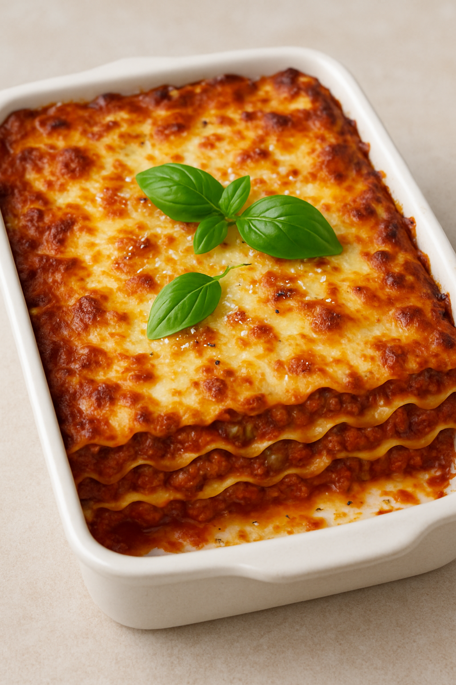

GPT Lasagna
Home

Description
Here’s a hearty, classic Lasagna recipe—perfect for family dinners or meal prep.
Ingredients
- 1 tbsp olive oil
- 1 onion, finely chopped
- 2 garlic cloves, minced
- 500g (1 lb) ground beef
- 1 can (28 oz) crushed tomatoes
- 2 tbsp tomato paste
- 1 tsp dried oregano
- 1 tsp dried basil
- Salt & pepper to taste
- Pinch of sugar (optional, to balance acidity)
For the Ricotta Layer:
- 450g (1 lb) ricotta cheese
- 1 egg
- 1/2 cup grated Parmesan cheese
- Salt & pepper to taste
Other:
- 9–12 lasagna noodles (regular or no-boil)
- 2–3 cups shredded mozzarella cheese
- Extra grated Parmesan for topping
- Fresh basil (optional garnish)
- Make the Sauce:
- Heat olive oil in a large skillet over medium heat.
- Add onion and cook until soft (about 5 minutes), then add garlic.
- Add ground beef, cooking until browned. Drain excess fat.
- Stir in crushed tomatoes, tomato paste, herbs, salt, pepper, and a pinch of sugar.
- Simmer uncovered for 20–30 minutes, stirring occasionally.
- Prepare Ricotta Mixture:
- In a bowl, mix ricotta, egg, Parmesan, salt, and pepper until smooth.
- Boil the Noodles (if not using no-boil):
- Cook lasagna noodles according to package instructions. Drain and set aside.
- Assemble:
- Preheat oven to 375°F (190°C).
- Spread a thin layer of meat sauce in the bottom of a 9x13 inch baking dish.
- Add a layer of noodles, then spread ricotta mixture, then meat sauce, then mozzarella.
- Repeat layers (usually 3 total), ending with sauce and mozzarella on top.
- Sprinkle with extra Parmesan.
- Bake:
- Cover with foil and bake for 25 minutes.
- Remove foil and bake another 15–20 minutes until bubbly and golden.
- Let rest 10–15 minutes before serving (important for clean slices).